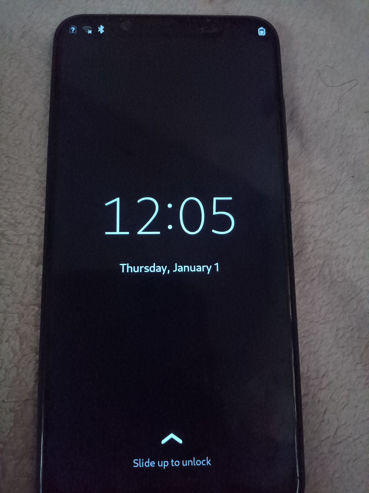

Xiaomi Mi 8 (SDM845)
| The device currently only works under outdated pmaports using linux 5.12.8 which is missing important components and is pending sdm845-mainline/linux!102 to port on Linux 6.11 |
|
 Mi 8 | |
| Manufacturer | Xiaomi |
|---|---|
| Name |
Mi 8/ Mi 8 Pro/ Mi 8 Explorer |
| Codename | xiaomi-dipper, xiaomi-equuleus, xiaomi-ursa |
| Released | 2018 |
| Type | handset |
| Hardware | |
| Chipset | Qualcomm Snapdragon 845 (SDM845) |
| CPU | Octa-core (4x 2.8 GHz Kryo 385 Gold & 4x 1.7 GHz Kryo 385 Silver) |
| GPU | Adreno 630 |
| Display | Samsung EA8074 CMD TFT LCD, multitouch, 16M Colors, 1080 x 2248 AMOLED |
| Storage | 64/128 GB |
| Memory | 6 GB |
| Architecture | aarch64 |
| Software | |
| Original software | Android (MIUI) |
| Original version | 8.0 |
| Extended version | 10 (MIUI 12) |
| FOSS bootloader | ? |
| postmarketOS | |
| Category | testing |
| Pre-built images | no |
| Mainline | no |
{kind=link}
| Flashing |
Works
|
|---|---|
| Internal storage |
Works
|
| Battery | |
| Screen |
Broken
|
| Touchscreen |
Broken
|
| Multimedia | |
| 3D Acceleration | |
| Audio | |
| Camera | |
| Camera Flash | |
| Connectivity | |
| WiFi |
Works
|
| Bluetooth | |
| GPS | |
| NFC | |
| Modem | |
| Calls | |
| SMS | |
| Mobile data | |
| Miscellaneous | |
| FDE |
Works
|
| USB OTG | |
| Sensors | |
| Accelerometer | |
| Magnetometer | |
| Ambient Light | |
| Proximity | |
| Hall Effect | |
| Barometer | |
| Power Sensor | |
Phone details
The relevant Mi8 family with SDM845 chips has the following devices:
- Xiaomi Mi 8 (xiaomi-dipper)
- Xiaomi Mi 8 Pro (xiaomi-equuelus)
- Xiaomi Mi 8 Explorer (xiaomi-ursa)
The phones appear to be nearly identical and apparently all use the same mainboard, but there are differences:
- Dipper has bigger battery and different fingerprint sensor (mounted at the back while equuelus and ursa have it under the screen)
A special case might be with xiaomi-ursa, which is a device with transparent back that have a fake plastic components as from available information it was used only in China for early adopters as a way to develop the firmware and then ~3 months later the dipper and equuelus were released to the public with ursa having it's firmware flashed on equuelus and sold in the rest of the world as Xiaomi Mi 8 Pro with titanium transparent back. The motherboard in ursa is not always the same and appears to be an earlier prototype which might have hidden hardware issues. Additionally the firmware for ursa is china-only and appears to have more features.
Reportedly the Xiaomi Pocophone F1 (xiaomi-beryllium) is allegedly built from ursa's designs to be very similar, but has different mainboard and devices.
Partition map
Observed to be the same on Dipper and Ursa, while probably same on Equuelus.
equuleus:/ # ls -la /dev/block/bootdevice/by-name/
total 0 drwxr-xr-x 2 root root 1740 1971-01-10 22:05 . drwxr-xr-x 3 root root 1880 1971-01-10 22:05 .. lrwxrwxrwx 1 root root 15 1971-01-10 22:05 ImageFv -> /dev/block/sdf4 lrwxrwxrwx 1 root root 16 1971-01-10 22:05 abl_a -> /dev/block/sde32 lrwxrwxrwx 1 root root 16 1971-01-10 22:05 abl_b -> /dev/block/sde33 lrwxrwxrwx 1 root root 16 1971-01-10 22:05 aop_a -> /dev/block/sde14 lrwxrwxrwx 1 root root 16 1971-01-10 22:05 aop_b -> /dev/block/sde15 lrwxrwxrwx 1 root root 15 1971-01-10 22:05 apdp -> /dev/block/sde6 lrwxrwxrwx 1 root root 15 1971-01-10 22:05 bk01 -> /dev/block/sda3 lrwxrwxrwx 1 root root 15 1971-01-10 22:05 bk02 -> /dev/block/sda4 lrwxrwxrwx 1 root root 15 1971-01-10 22:05 bk03 -> /dev/block/sda5 lrwxrwxrwx 1 root root 15 1971-01-10 22:05 bk04 -> /dev/block/sda8 lrwxrwxrwx 1 root root 16 1971-01-10 22:05 bk05 -> /dev/block/sda13 lrwxrwxrwx 1 root root 15 1971-01-10 22:05 bk31 -> /dev/block/sdd1 lrwxrwxrwx 1 root root 15 1971-01-10 22:05 bk32 -> /dev/block/sdd3 lrwxrwxrwx 1 root root 15 1971-01-10 22:05 bk33 -> /dev/block/sdd5 lrwxrwxrwx 1 root root 15 1971-01-10 22:05 bk41 -> /dev/block/sde3 lrwxrwxrwx 1 root root 15 1971-01-10 22:05 bk42 -> /dev/block/sde9 lrwxrwxrwx 1 root root 16 1971-01-10 22:05 bk43 -> /dev/block/sde16 lrwxrwxrwx 1 root root 16 1971-01-10 22:05 bk44 -> /dev/block/sde17 lrwxrwxrwx 1 root root 16 1971-01-10 22:05 bk45 -> /dev/block/sde25 lrwxrwxrwx 1 root root 16 1971-01-10 22:05 bk46 -> /dev/block/sde29 lrwxrwxrwx 1 root root 16 1971-01-10 22:05 bk47 -> /dev/block/sde38 lrwxrwxrwx 1 root root 16 1971-01-10 22:05 bk48 -> /dev/block/sde40 lrwxrwxrwx 1 root root 16 1971-01-10 22:05 bk49 -> /dev/block/sde41 lrwxrwxrwx 1 root root 15 1971-01-10 22:05 bk51 -> /dev/block/sdf2 lrwxrwxrwx 1 root root 15 1971-01-10 22:05 bk52 -> /dev/block/sdf3 lrwxrwxrwx 1 root root 15 1971-01-10 22:05 bk53 -> /dev/block/sdf5 lrwxrwxrwx 1 root root 16 1971-01-10 22:05 bluetooth -> /dev/block/sde24 lrwxrwxrwx 1 root root 16 1971-01-10 22:05 boot -> /dev/block/sde45 lrwxrwxrwx 1 root root 16 1971-01-10 22:05 cache -> /dev/block/sda20 lrwxrwxrwx 1 root root 15 1971-01-10 22:05 cdt -> /dev/block/sdd2 lrwxrwxrwx 1 root root 16 1971-01-10 22:05 cmnlib64_a -> /dev/block/sde20 lrwxrwxrwx 1 root root 16 1971-01-10 22:05 cmnlib64_b -> /dev/block/sde21 lrwxrwxrwx 1 root root 16 1971-01-10 22:05 cmnlib_a -> /dev/block/sde18 lrwxrwxrwx 1 root root 16 1971-01-10 22:05 cmnlib_b -> /dev/block/sde19 lrwxrwxrwx 1 root root 16 1971-01-10 22:05 cust -> /dev/block/sda18 lrwxrwxrwx 1 root root 15 1971-01-10 22:05 ddr -> /dev/block/sdd4 lrwxrwxrwx 1 root root 16 1971-01-10 22:05 devcfg_a -> /dev/block/sde12 lrwxrwxrwx 1 root root 16 1971-01-10 22:05 devcfg_b -> /dev/block/sde13 lrwxrwxrwx 1 root root 16 1971-01-10 22:05 devinfo -> /dev/block/sda12 lrwxrwxrwx 1 root root 16 1971-01-10 22:05 dip -> /dev/block/sde28 lrwxrwxrwx 1 root root 16 1971-01-10 22:05 dsp -> /dev/block/sde44 lrwxrwxrwx 1 root root 16 1971-01-10 22:05 dtbo -> /dev/block/sde37 lrwxrwxrwx 1 root root 15 1971-01-10 22:05 frp -> /dev/block/sda7 lrwxrwxrwx 1 root root 15 1971-01-10 22:05 fsc -> /dev/block/sdf1 lrwxrwxrwx 1 root root 16 1971-01-10 22:05 fsg -> /dev/block/sde36 lrwxrwxrwx 1 root root 16 1971-01-10 22:05 hyp_a -> /dev/block/sde26 lrwxrwxrwx 1 root root 16 1971-01-10 22:05 hyp_b -> /dev/block/sde27 lrwxrwxrwx 1 root root 16 1971-01-10 22:05 keymaster_a -> /dev/block/sde22 lrwxrwxrwx 1 root root 16 1971-01-10 22:05 keymaster_b -> /dev/block/sde23 lrwxrwxrwx 1 root root 15 1971-01-10 22:05 keystore -> /dev/block/sda6 lrwxrwxrwx 1 root root 15 1971-01-10 22:05 limits -> /dev/block/sde2 lrwxrwxrwx 1 root root 16 1971-01-10 22:05 logdump -> /dev/block/sda16 lrwxrwxrwx 1 root root 16 1971-01-10 22:05 logfs -> /dev/block/sda10 lrwxrwxrwx 1 root root 16 1971-01-10 22:05 logo -> /dev/block/sde43 lrwxrwxrwx 1 root root 16 1971-01-10 22:05 minidump -> /dev/block/sda17 lrwxrwxrwx 1 root root 15 1971-01-10 22:05 misc -> /dev/block/sda9 lrwxrwxrwx 1 root root 16 1971-01-10 22:05 modem -> /dev/block/sde46 lrwxrwxrwx 1 root root 15 1971-01-10 22:05 modemst1 -> /dev/block/sdf6 lrwxrwxrwx 1 root root 15 1971-01-10 22:05 modemst2 -> /dev/block/sdf7 lrwxrwxrwx 1 root root 15 1971-01-10 22:05 msadp -> /dev/block/sde7 lrwxrwxrwx 1 root root 16 1971-01-10 22:05 oops -> /dev/block/sda11 lrwxrwxrwx 1 root root 16 1971-01-10 22:05 persist -> /dev/block/sda14 lrwxrwxrwx 1 root root 16 1971-01-10 22:05 persistbak -> /dev/block/sda15 lrwxrwxrwx 1 root root 15 1971-01-10 22:05 qupfw_a -> /dev/block/sde4 lrwxrwxrwx 1 root root 15 1971-01-10 22:05 qupfw_b -> /dev/block/sde5 lrwxrwxrwx 1 root root 16 1971-01-10 22:05 recovery -> /dev/block/sda19 lrwxrwxrwx 1 root root 15 1971-01-10 22:05 sec -> /dev/block/sde1 lrwxrwxrwx 1 root root 16 1971-01-10 22:05 splash -> /dev/block/sde42 lrwxrwxrwx 1 root root 16 1971-01-10 22:05 spunvm -> /dev/block/sde39 lrwxrwxrwx 1 root root 15 1971-01-10 22:05 ssd -> /dev/block/sda2 lrwxrwxrwx 1 root root 16 1971-01-10 22:05 sti -> /dev/block/sde30 lrwxrwxrwx 1 root root 16 1971-01-10 22:05 storsec_a -> /dev/block/sde10 lrwxrwxrwx 1 root root 16 1971-01-10 22:05 storsec_b -> /dev/block/sde11 lrwxrwxrwx 1 root root 15 1971-01-10 22:05 switch -> /dev/block/sda1 lrwxrwxrwx 1 root root 16 1971-01-10 22:05 system -> /dev/block/sde48 lrwxrwxrwx 1 root root 16 1971-01-10 22:05 toolsfv -> /dev/block/sde31 lrwxrwxrwx 1 root root 16 1971-01-10 22:05 tz_a -> /dev/block/sde34 lrwxrwxrwx 1 root root 16 1971-01-10 22:05 tz_b -> /dev/block/sde35 lrwxrwxrwx 1 root root 16 1971-01-10 22:05 userdata -> /dev/block/sda21 lrwxrwxrwx 1 root root 15 1971-01-10 22:05 vbmeta -> /dev/block/sde8 lrwxrwxrwx 1 root root 16 1971-01-10 22:05 vendor -> /dev/block/sde47 lrwxrwxrwx 1 root root 15 1971-01-10 22:05 xbl_a -> /dev/block/sdb2 lrwxrwxrwx 1 root root 15 1971-01-10 22:05 xbl_b -> /dev/block/sdc2 lrwxrwxrwx 1 root root 15 1971-01-10 22:05 xbl_config_a -> /dev/block/sdb1 lrwxrwxrwx 1 root root 15 1971-01-10 22:05 xbl_config_b -> /dev/block/sdc1
Contributors
Maintainer(s)
Users owning this device
- Kreyren (Notes: Ursa in Mint Condition, used for developing NixOS compatibility)
How to enter flash mode
Bootloader Unlocking
| Do NOT attempt to bypass the unlock key via MiUnlockToolv2 as Xiaomi patched the vulnerability on their servers and when attempted it could result in a longer wait time or in some cases you bricked device that can only be unlocked at Official Xiaomi Store or their Authorized Technician for a fee or ~40 EUR provided you have a proof of purchase.
|
Like other Xiaomi devices, the user will have to acquire the bootloader unlock key: https://en.miui.com/unlock
The device will not unlock if the device isn't 7 days old (from the time when your device connects to internet and powered on, and linked with Mi Account)
Recovery mode
At any state of the device hold Volume Up and Power button until the recovery screen shows up.
Flashing (Download, Fastboot) mode
Same as recovery, but this time hold the Volume Down and Power keys.
Debug UART
Warning: Unknown voltage
{kind=link}
Links
- pmaports!2257 Initial merge request
- sdm845-mainline/linux!102 Port on Linux 6.11
- Schematics For Xiaomi Dipper
Not submitted to the main line https://gitlab.com/Akitlove